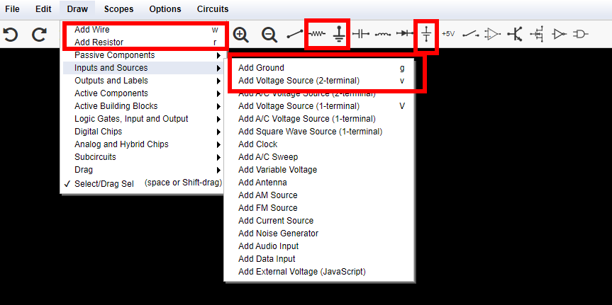
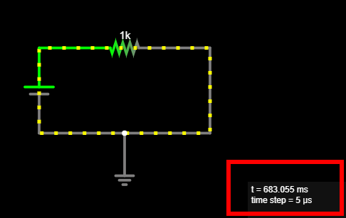
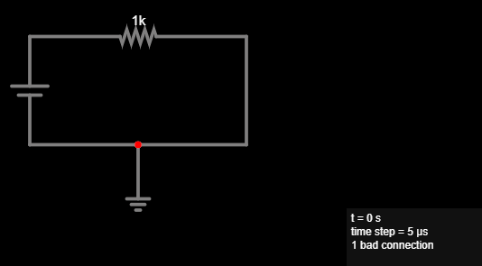
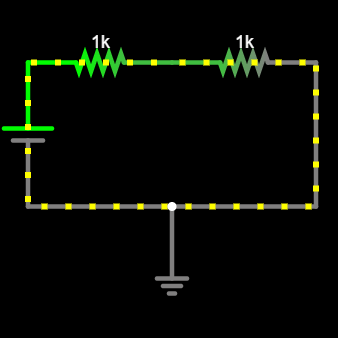
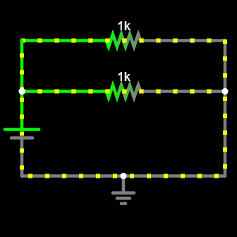

Adventure 0: Ohm’s Law¶
Goal¶
Design your first circuit. First, simulate it on your computer. Then, create it on a breadboard.
Understand Ohm’s law and experiment with different electrical components.
Simulate circuit¶
We will use an interactive circuit simulator running inside your browser to simulate a simple circuit. It was written by Paul Falstad and enhanced by Iain Sharp.
Watch this video tutorial on Circuit Simulator as an introduction to how it works.
Navigate to Circuit Simulator. Notice the application will open in a new tab in your browser. Drag the tab out into its own window, so you can have these instructions and the Circuit simulator open side-by-side.
To concentrate on your circuits, press F11 to switch fullscreen mode on and off.
Click File –> New Blank Circuit to start with a new blank circuit.
Add a voltage source, a resistor, and a ground wire to your circuit. Connect them with wires. Here is a screenshot that can help you find the tools you will need:

At this point your circuit should look something like this:

Tip
Notice the mouse cursor changes when you are ready to draw a new component, compared to when you are moving components around. Use the Esc key to stop drawing components.
Click the RUN / Stop button to start the simulation, and see the current flow!
Important
Make sure Circuit Simulator reports no bad connection. Circuit Simulators highlights bad connections using red dots.
Here is an example, where I thought the ground was connected to the wire, but it was not, it was floating instead. Notice the red dot and how the simulator reports
1 bad connection:
To fix this, and establish a connection to the ground:
Hover over the single wire and press
Delto delete it.Add a new wire for the left part of the original wire.
Add a new wire for the right part of the original wire.
Alternatively, you can split the wire at the point where you want to connect your ground. This is a more advanced operation:
Hover your mouse over the wire, so it is selected.
Move the mouse cursor close to the red dot, but not on the red dot.
Hold down the Ctrl key and click, so you split the wire at this point, and a new node appears where it connects with ground.
If you would like some help with creating the circuit, see below.
Hint
Here is an example of the finished circuit: Circuit - Ohm’s law
Explore: Change your circuit, move things around, delete components and re-add them.
Tip
If you make a mistake, use Ctrl-Z to undo.
Hover your mouse over the different selections in the UI, a tooltip will appear.
Notice there are useful keyboard shortcuts for all components you need to add. For example press r to insert a new resistor. Explore to find more!
Click Edit –> Center Circuit to center your circuit. Also find commands to zoom in and out of your circuit in the Edit menu.
If you close your browser window by mistake, use File –> Recover Auto-Save to bring back your latest work.
Notice the current flows around your circuit, through the resistor. Hover your mouse over the resistor, and notice the values shown inside the box on the lower-right corner. Notice the resistance of this component, it’s \(R = 1kΩ\). Notice the value for the current flowing through the resistor. \(I = 5mA\). Notice the value for the voltage drop around the resistor, it’s \(V_d = 5V\).
Double click the voltage source and change its voltage to
10, i.e., \(10V\). Hover over the resistor again, how much is the current flowing through the circuit now?Answer
Notice it is double, \(I = 10mA\). Double the voltage, double the current.
What happens to the current if you double the resistance? Double click the resistor, set it to
2k, i.e., \(2kΩ\).Answer
Double the resistance, half the current.
Notice the current flowing through the circuit depends on the voltage of the source and the resistance of the resistor.
Important
Ohm’s law determines how much current flows through a resistor:
\[I = {V \over R}\]This means that for each resistor we can always find one of \(I\), \(V\), or \(R\), if we know the other two:
\[ I = {V \over R} \qquad R = {V \over I} \qquad V = I \times R \]Note
Ohm’s law only applies to ideal resistors, which we also call resistive, or ohmic loads. We will see there are other types of loads, like diodes, and capacitors, later on.
Double click the voltage source, make sure it’s set to \(5V\). What should the resistance be to have a current of \(I = 25mA\) flow through the circuit? Use Ohm’s law to compute it.
Answer
Let’s use Ohm’s law:
\[ R = {V \over I} = {5V \over 25mA} = {5 \over {25 \cdot 10^{-3}}} = {5000V \over 25A} = 200Ω \]Set the resistor’s value to the one you just computed. How much current flows through the circuit?
Hover over different wires. Notice the same current, \(I\) flows through every part of the circuit. Notice the voltage drop is zero, \(V_d = 0\).
Tip
Wires are ideal and have zero resistance. Their length does not matter, their resistance is always \(R = 0\), so the voltage drop around them is always \(V_d = 0\).
Hover over different nodes in the circuit. How much is the voltage at the two ends of the resistor?
Answer
Notice one end is at \(5V\), because it is connected to the long end of the voltage source – the positive end – and one end is at \(0V\), because it is connected to ground.
Experiment with different values of \(V\) and \(R\) for the voltage source and resistor, respectively. Confirm Ohm’s law applies.
Build circuit¶
Grab your breadboard! It’s time to build the actual circuit, and use a multimeter to measure voltages and currents:
Observe your breadboard. Notice it has holes arranged in columns and rows. The holes are all connected in a specific pattern, watch this video on how breadboard works to understand more.
Take your multimeter and set it to the 🎵 position. Touch the probes together, confirm that the meter beeps. This means there it detects an electrical connection between the two probes – very small resistance.
Test different pairs of holes using your multimeter. When does it beep, and why?
Hint
Use the probe wires with crocodile clips at the end and clip them on small wires, so you can put them in the holes of the breadboard.
Set your multimeter to Ω - 200 or a similar range. This means it can measure resistors up to
200Ω. Take an 150Ω resistor and measure it, what value does the multimeter show? Why is it not exactly 150Ω?Answer
No component is ideal in the real world. Resistors are built with tolerance. Also, resistance depends on environmental factors, e.g., ambient temperature.
Take a DC chassis connector [5.50mm x 2.1mm], it should look similar to this one. Find out which pins correspond to the round part and the pin of the barrel plug. Connect two small wires at each pin, so you can then insert them in the breadboard. Insert the wire that corresponds to the pin in the (+) bar, and the wire that corresponds to the round part in the (-) bar. The (+) bar will be your “VCC” [supply voltage], the (-) bar will be your GND [ground].
Take a USB charger and connect it to your wall outlet. Take a USB A –> DC 5.50 x 2.10mm cable – it should look similar to this one – and use it to connect the USB charger with the chassis connector on your breadboard.
Danger
NEVER connect anything else to your wall outlet except the USB charger. Wall outlets supply extremely dangerous voltages, 110V or 220V.
Set your multimeter to “V - 20V” or a similar range. Measure voltage across the breadboard. How much voltage does the USB charger supply to your breadboard? Ensure you are measuring around \(5V\). Note down this value. Why is it not exactly \(5.00V\)?
Answer
No component is ideal in the real world. Voltage sources do not supply a constant voltage, their voltage actually depends on the current that flows through the circuit, and other factors.
The polarity – the sign of the measurement – is important! Make sure to place the red lead on (+), the black lead on (-). What happens if you reverse them?
Build your circuit. Choose a resistor around 150Ω, and connect between the VCC and GND bars. Current is now flowing through the resistor! How much current do you expect is now flowing? Use Ohm’s law to compute it.
Measure this current. Connect your multimeter in series with the resistor, that is between VCC and the resistor, or between the resistor and ground. Set it to “DC A - 200m” or similar. How much current do you measure? How does it compare to your estimate in the previous step? What happens if your reverse the probes?
Measure the voltage between VCC and GND again. Is it the same as when no current was flowing through the circuit? Keep the multimeter connected, and connect and disconnect one leg of the resistor, to close and open the circuit. What do you notice?
Answer
The voltage changes, because the USB charger is a real-world component, and not an ideal voltage source. It is slightly lower when current flows through the circuit.
Celebrate¶
Congratulations! You’ve simulated and built your first circuit. Here are more things to explore, as you prepare to embark on your next adventure.
What happens if you connect two resistors in series, one after the other? That is, you insert one more resistor between one leg of the existing resistor, and VCC or GND. Simulate the circuit and build it on your breadboard.
Here is what your circuit should look like:

What happens if you connect two resistors in parallel? That is, you insert one more resistor which touches exactly the same points as the existing resistor. They both connect to VCC and GND at the same time.
Here is what your circuit should look like:

Here are more resources to explore: